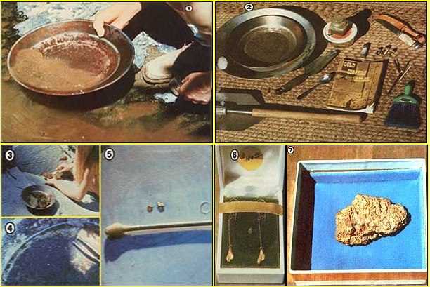
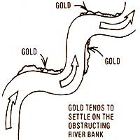
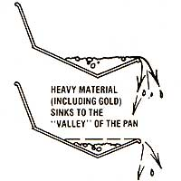

You can profit your vacation...if you
It would be hard to imagine a more exciting, pleasurable, and often lucrative occupation than gold panning. You won't have to spend hundreds of dollars to get yourself started in this pastime, either ... and there's plenty of the famous yellow metal still waitin' to be found!
Back around 1849, gold panning was the major source of income for thousands of prospectors, and the average daily find was about half an ounce per person. If you could do as well today (and there's no reason why you can't! ), such a seemingly small amount of metal -which is, at the time this article is being written, priced at over $200 an ounce -would provide you with a pretty impressive day's wages!
Your most important piece of "mining" equipment is a good gold pan. Such a utensil can be as large as 18 inches across, but it's probably best to start with a 12-incher . . . which will cost between $3.00 and $4.00 and should be available at a nearby sporting goods store. When you buy a new steel pan, be sure to wash it to remove the protective coating, then heat it over a campfire or burner (but don't let the metal get red hot) to darken the color and make gold easier to spot. Remember to let the "gold finder" cool gradually-because you can warp a hot pan by dipping it in water-and always keep this vital tool free from grease and oil.
There's also a new plastic pan on the market that simplifies the art of gold panning a bit. In addition to being lightweight . . . the modern device has builtin ridges, which help to trap the gold. If you find that you can't locate one of these "improved" units, they can be ordered-for $4.95 each, postpaid-from the manufacturer: Garrett Electronics, Dept. RLTMEN, 2814 National Drive, Garland, Texas 75041.
You'll also need a small shovel and/or a pickaxe, a crowbar (this tool is optional but would be good for cracking open crevices and probing for bedrock), a trowel and/or spoon (to clean out crannies), a whisk broom, a large container with a wide mouth and a tight lid, glass or plastic vials with caps, a big sturdy pocketknife, tweezers or a camel's-hair brush or Q-tip, a magnifying glass, some nitric or hydrochloric acid, and a small amount of mercury.
Gold can be found-in large quantities-all over the western United States. Lesser known, however, are the gold fields of the eastern U.S. (see the longer of the two sidebars which accompany this article) . . . including some particularly rich deposits that have been reported in Georgia, North Carolina, Tennessee, Vermont, and Pennsylvania.
If you plan to pan on private property, be sure to ask permission to work the stream. However, national forests-and public domain lands under the administration of the Bureau of Land Management-are open panning grounds, while national parks and monuments (with the exception of Death Valley) generally are not. The rules in any of these locations may vary, though, so always check with the rangers before you start your search. And no matter where your gold hunt takes you, it's important to leave the land and streams pretty much as you found them (this, of course, includes filling in any holes you may dig).
Gold panning is a form of what's known as "placer (rhyme it with passer, not pacer) mining". Every winter, rains wash small pieces of gold down the sides of hills and into creeks and rivers. Such flakes of the precious mineral-which is nearly 20 times heavier than an equal volume of water, seven times heavier than sand, and four times heavier than most other metals-bump along the river bottom until they sink in a slowing current or get lodged against some obstruction in placer deposits: bits of metal mingled with grit and gravel.
Consequently . . . the inside curve of a river or stream, crevices, tree roots, and rough bedrock can snare substantial amounts of the heavy ore. (A big boulder in the middle of a gravel bar can yield particularly rich finds.)
"Mossing" is another easy way to pan a lot of "color". When mossy rocks are covered by high winter waters, they'll often trap nearly all the gold that passes over them. (The thicker and older the growth, the more precious metal it might be hiding! ) Dry stream beds can be loaded with gold flakes, too.
After you've located a promising spot, dig up a couple of handfuls of sand and gravel and put them in your pan. (If you're working a crevice, be sure to scrape out all the little nooks and crannies.) Then cover the accumulated grit with water and remove all the bigger rocks and pebbles, making sure that no dirt (and possibly gold) sticks to them.
If you're "mossing", carefully cut or scrape the plants off a rock until you have enough to cover the bottom of your pan. (Remember that moss has a role to play in the balance of nature . .. so always leave a few patches to allow the greenery to grow back.) Crunch up the growth to separate it from the dirt . . . add water . . . and continue to mash the moss until there's nothing clinging to it.
Now ... You're ready to pan. First, hold the shallow receptacle in one hand, be sure it contains enough water to put all the ingredients in a state of liquid suspension, and tilt it away from you at about a 30-degree angle. Then, move the pan rapidly back and forth with a slightly oval motion. (If you're using a plastic container, make your movement more like a seesaw.) Keep the action vigorous . . . but be careful not to spill any sand. About 30 seconds of this agitation will sift all the gold and heavier materials to the bottom of your pan.
Next, find a calm stretch of water . . . and submerge the container's sand-laden end. Then draw the pan out slowly . . . allowing the water to carry the lighter sand, sticks, moss, etc. over its edge. You can usually do this about three times before you have to shake down the gold again. (It may take a few tries to get the hang of this panning technique.)
Continue to remove any of the bigger pieces of rock, while you keep an eye out for nuggets. Work the contents of your pan down until you have mostly gold and black sand left. (This black sand, which often accompanies placer gold, is a type of iron compound, usually magnetite. A red sand-actually ground-up garnets-is also found in some gold-producing streams.) Swish the sand back and forth to see how much color you have. It's been said that seven flakes of gold in one pan is the mark of a good spot . . . and don't let the minute size of those flakes get you down. They'll add up fast . . . ten troy ounces of gold take up only one cubic inch of space!
All that glitters is definitely not gold ... and, occasionally, even gold doesn't shine. The metal's color can vary from lemon yellow to a dull golden hue. At times, nuggets will be covered with some other metal (like mercury), so check out any soft and very heavy pebbles . . . being malleable, gold won't break but will smash or bend instead. The real treasure clue, however, is that the color of gold will remain the same . . . regardless of whether it's in the sun or shade.
Fool's gold (iron pyrite), on the other hand, changes color from shade to sunlight and will flake when broken. Mica, too, glitters under water . . . but the small, light particles of this substance will usually float away during panning.
If, despite these tests, you're still not sure of your find, put some nitric or hydrochloric acid on the sample. If the chemical bubbles, you've been fooled . . . because the "real thing" will create no reaction at all.
Use your tweezers . . . a wet, narrow camel's-hair brush . . . or a wet Q-tip to remove each golden flake from your pan. A special enclosed magnet (or a "lodestone" wrapped in paper or plastic . . . to keep it from sticking to the pan) can be used to remove any dry black sand. (Take it slow, however: Smaller pieces of gold often get trapped between the darker grains and can be lost! )
Put your flakes and nuggets in a small vial filled with water, and store any sand that contains tiny specks of "flour gold" in a wide-mouthed container to be separatod later.
Since gold is usually formed in quartz veins, always check for the metal in any pieces of quartz you run across. Such gold-bearing rocks are particularly valuable to collectors and-like large nuggets-often bring in several times the price of pure gold.
|
 [1] Panning for placer in a rushing mountain stream. [2J The novice forty-niner's start up kit. [3J Moss on rocks- nature's own filter-can hold a treasure! [4] Golden flecks glittering in the prospector's pan. [5] Pick up the precious flakes with a moist Q-Tip. [6] Setting your strike in jewelry can enhance its appearance . . .and its value! [7] Gold! That ""monster-sized"" nugget . . , every prospector's dream. |
 |
 |